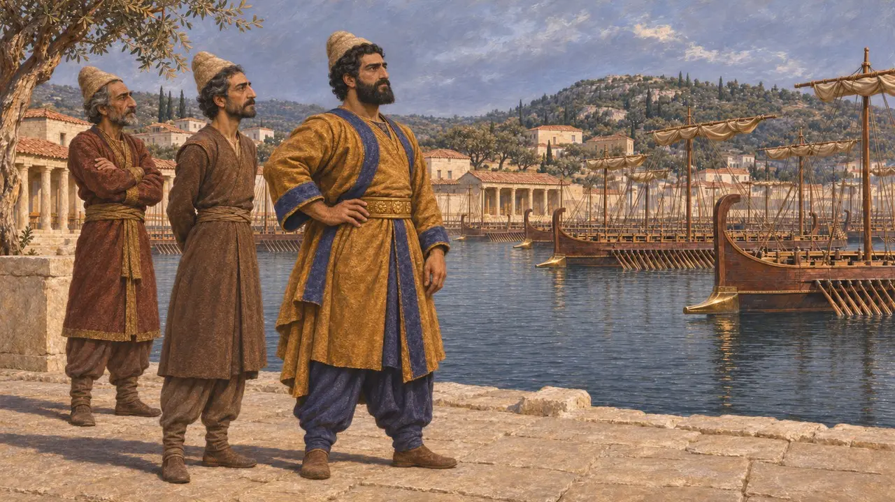
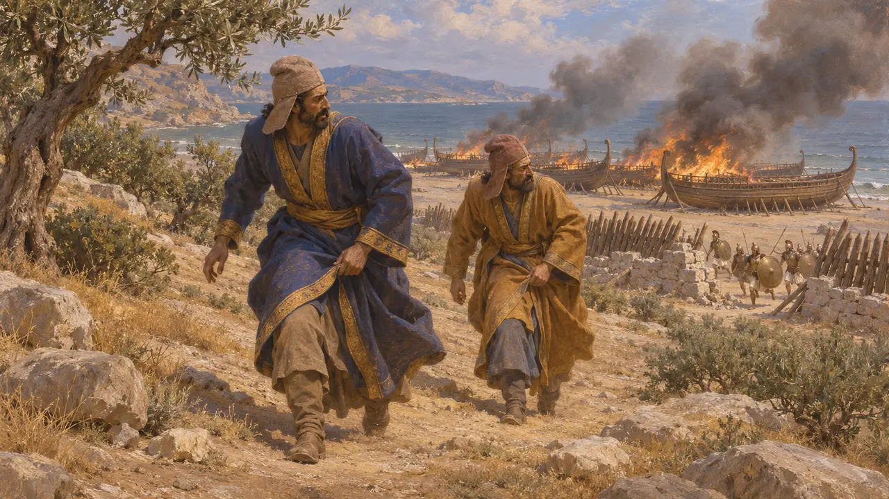
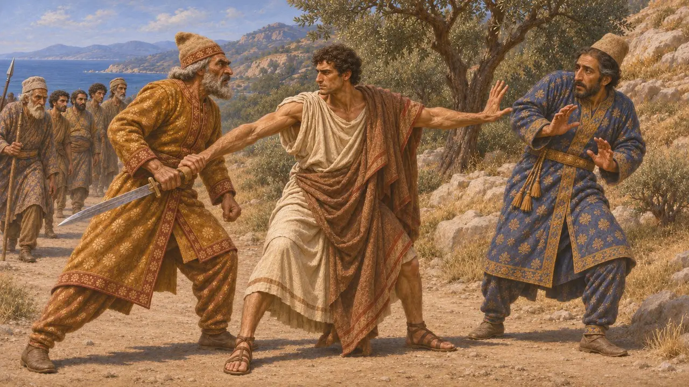
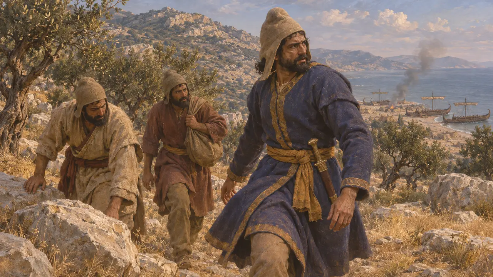
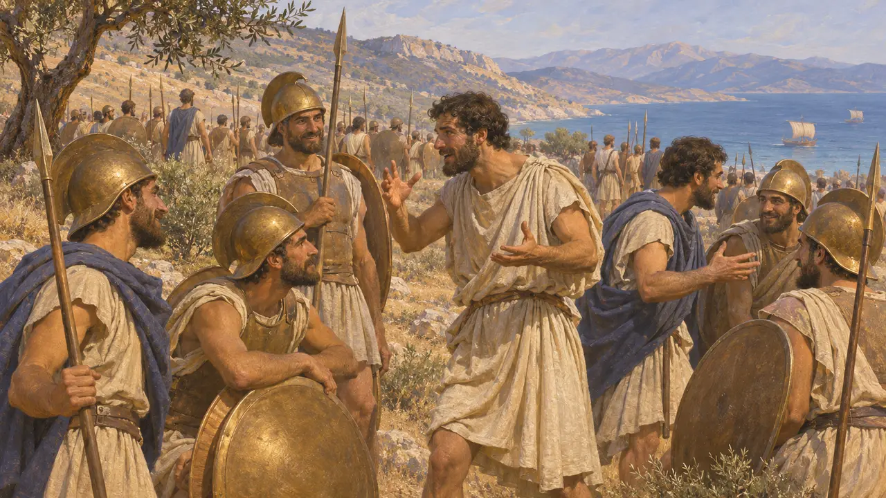

Artayntès
Commandant de la flotte perse qui échappa à la défaite de Mycale, 479 av. J.-C.
Artayntès était un commandant perse de la flotte qui hiverna à Samos après Salamine. Selon Hérodote, il échappa à la défaite perse de Mycale en 479. Il n'est connu presque exclusivement que par Hérodote, de sorte que le récit grec est la principale voix à son sujet.
Dans le jeu : Artayntès est nommé dans les articles du jeu sur la bataille de Mycale et sur le retour de Xerxès en Asie. Il n'a ni personnage, ni unité, ni mécanique propre.


Mycale et la fuite
Récit antiqueSelon le récit d'Hérodote, les Perses tirèrent leurs navires à terre à Mycale, derrière une barrière de pieux et de pierres. Les Grecs débarquèrent et enfoncèrent la ligne perse, et le commandant de l'armée, Tigrane, fut tué. Hérodote dit qu'Artayntès et Ithamitrès comptaient parmi ceux qui s'échappèrent, tandis que les Grecs incendiaient les navires.
Herodotus 9.96-106

La querelle avec Masistès
Récit antiqueHérodote raconte que Masistès, fils de Darius, furieux de la défaite, injuria Artayntès en le traitant de pire qu'une femme. Masistès tira son épée, et Xénagoras d'Halicarnasse serait intervenu pour sauver Artayntès. Hérodote situe la scène pendant la retraite hors du champ de bataille.
Herodotus 9.107

Ce que les sources permettent d'affirmer
ContestéÀ la connaissance du vérificateur, aucune inscription ni tablette perse ne nomme Artayntès ; Hérodote est donc la seule voix à témoigner de sa conduite. Les historiens admettent qu'une force perse a été battue à Mycale, mais ils débattent de son importance et de la mesure dans laquelle la tradition grecque a façonné les récits sur les commandants perses. La querelle avec Masistès doit peut-être quelque chose à cette tradition.
Herodotus 9.107

La rumeur de Platées
Légende tardiveHérodote rapporte qu'une rumeur de victoire à Platées parcourut l'armée grecque avant le combat de Mycale et lui redonna courage. Il présente la coïncidence des deux batailles comme un signe de la faveur divine. C'est un récit façonné pour porter une morale, et non une preuve solide de ce qui s'est passé.
Herodotus 9.100-101
Sources
- Herodotus 9.96-107
- Herodotus 8.130
- Herodotus 7.22